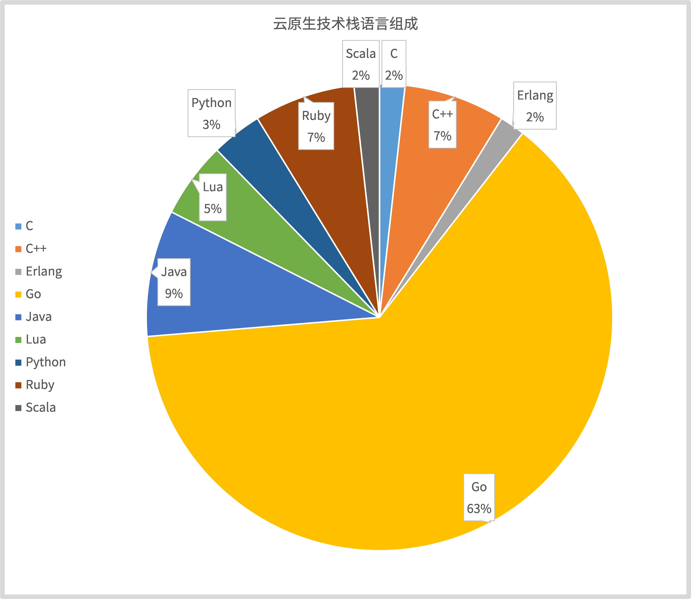
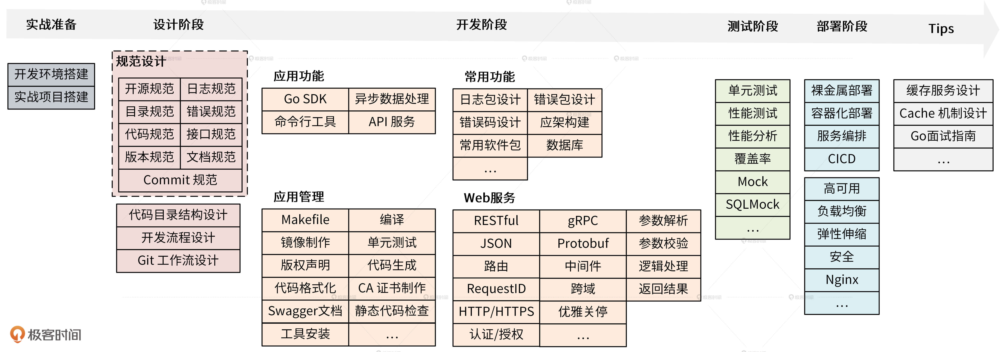

- 00 开篇词 从 0 开始搭建一个企业级 Go 应用.md.html
- 01 IAM系统概述：我们要实现什么样的 Go 项目？.md.html
- 02 环境准备：如何安装和配置一个基本的 Go 开发环境？.md.html
- 03 项目部署：如何快速部署 IAM 系统？.md.html
- 04 规范设计（上）：项目开发杂乱无章，如何规范？.md.html
- 05 规范设计（下）：commit 信息风格迥异、难以阅读，如何规范？.md.html
- 06 目录结构设计：如何组织一个可维护、可扩展的代码目录？.md.html
- 07 工作流设计：如何设计合理的多人开发模式？.md.html
- 08 研发流程设计（上）：如何设计 Go 项目的开发流程？.md.html
- 09 研发流程设计（下）：如何管理应用的生命周期？.md.html
- 10 设计方法：怎么写出优雅的 Go 项目？.md.html
- 11 设计模式：Go常用设计模式概述.md.html
- 12 API 风格（上）：如何设计RESTful API？.md.html
- 13 API 风格（下）：RPC API介绍.md.html
- 14 项目管理：如何编写高质量的Makefile？.md.html
- 15 研发流程实战：IAM项目是如何进行研发流程管理的？.md.html
- 16 代码检查：如何进行静态代码检查？.md.html
- 17 API 文档：如何生成 Swagger API 文档 ？.md.html
- 18 错误处理（上）：如何设计一套科学的错误码？.md.html
- 19 错误处理（下）：如何设计错误包？.md.html
- 20 日志处理（上）：如何设计日志包并记录日志？.md.html
- 21 日志处理（下）：手把手教你从 0 编写一个日志包.md.html
- 22 应用构建三剑客：Pflag、Viper、Cobra 核心功能介绍.md.html
- 23 应用构建实战：如何构建一个优秀的企业应用框架？.md.html
- 24 Web 服务：Web 服务核心功能有哪些，如何实现？.md.html
- 25 认证机制：应用程序如何进行访问认证？.md.html
- 26 IAM项目是如何设计和实现访问认证功能的？.md.html
- 27 权限模型：5大权限模型是如何进行资源授权的？.md.html
- 28 控制流（上）：通过iam-apiserver设计，看Web服务的构建.md.html
- 29 控制流（下）：iam-apiserver服务核心功能实现讲解.md.html
- 30 ORM：CURD 神器 GORM 包介绍及实战.md.html
- 31 数据流：通过iam-authz-server设计，看数据流服务的设计.md.html
- 32 数据处理：如何高效处理应用程序产生的数据？.md.html
- 33 SDK 设计（上）：如何设计出一个优秀的 Go SDK？.md.html
- 34 SDK 设计（下）：IAM项目Go SDK设计和实现.md.html
- 35 效率神器：如何设计和实现一个命令行客户端工具？.md.html
- 36 代码测试（上）：如何编写 Go 语言单元测试和性能测试用例？.md.html
- 37 代码测试（下）：Go 语言其他测试类型及 IAM 测试介绍.md.html
- 38 性能分析（上）：如何分析 Go 语言代码的性能？.md.html
- 39 性能分析（下）：API Server性能测试和调优实战.md.html
- 40 软件部署实战（上）：部署方案及负载均衡、高可用组件介绍.md.html
- 41 软件部署实战（中）：IAM 系统生产环境部署实战.md.html
- 42 软件部署实战（下）：IAM系统安全加固、水平扩缩容实战.md.html
- 43 技术演进（上）：虚拟化技术演进之路.md.html
- 44 技术演进（下）：软件架构和应用生命周期技术演进之路.md.html
- 45 基于Kubernetes的云原生架构设计.md.html
- 46 如何制作Docker镜像？.md.html
- 47 如何编写Kubernetes资源定义文件？.md.html
- 48 IAM 容器化部署实战.md.html
- 49 服务编排（上）：Helm服务编排基础知识.md.html
- 50 服务编排（下）：基于Helm的服务编排部署实战.md.html
- 51 基于 GitHub Actions 的 CI 实战.md.html
- 特别放送 Go Modules依赖包管理全讲.md.html
- 特别放送 Go Modules实战.md.html
- 特别放送 IAM排障指南.md.html
- 特别放送 分布式作业系统设计和实现.md.html
- 特别放送 给你一份Go项目中最常用的Makefile核心语法.md.html
- 特别放送 给你一份清晰、可直接套用的Go编码规范.md.html
- 直播加餐 如何从小白进阶成 Go 语言专家？.md.html
- 结束语 如何让自己的 Go 研发之路走得更远？.md.html
- 捐赠
00 开篇词 从 0 开始搭建一个企业级 Go 应用
你好，我是孔令飞，很高兴能在这里和你聊聊如何用 Go 构建企业级应用。
在过去的 5 年里，我一直在腾讯使用 Go 做大型企业级项目。比如说，腾讯云云函数 SCF、腾讯游戏容器平台 TenC、腾讯游戏微服务中台等。目前，我在腾讯云负责容器服务 TKE 的相关研发工作，专注于云原生混合云领域的基础架构开发。
“云”是大势所趋，而Go是云时代的语言
最近几年，我发现腾讯很多团队的开发语言都在转 Go。其实，不光腾讯，像阿里、华为和百度这类国内一线大厂也都在积极转 Go。甚至不少团队，所有项目都是用 Go 构建的。伴随而来的，就是各个公司对Go研发工程师的需求越来越旺盛。那么， Go 为什么会变得这么火热呢？我认为，原因主要有两个方面。
一方面，Go 是一门非常优秀的语言，它具有很多核心优势，例如：语言简单、语言层面支持并发编程、跨平台编译和自带垃圾回收机制等，这些优势是这些团队选择 Go 最根本的原因。
另一方面，也因为 Go 是云时代的语言。为什么这么说呢？下面，我来详细说说。
随着云计算平台的逐渐成熟，应用上云已经成为一个不可逆转的趋势了，很多公司都选择将基础架构/业务架构云化，例如阿里、腾讯都在将公司内部业务全面云化。可以说，全面云化已经是公司层面的核心 KPI了，我们甚至可以理解为以后所有的技术都会围绕着云来构建。
而云目前是朝着云原生架构的方向演进的，云原生架构中具有统治力（影响力）的项目绝大部分又是用 Go 构建的。我们从下面这张云原生技术栈语言组成图中可以看到，有 63% 的具有统治力的云原生项目都是用 Go 来构建的。

完整的云原生技术栈可参考云原生技术图谱
因此，想要把基础架构/业务架构云化，离不开对这些云原生开源项目的学习、改造。而一个团队为了节省成本，技术栈最好统一。既然我们一定要会 Go，而且 Go 这么优秀，那最好的方式就是将整个团队的语言技术栈 all in Go，这也是 Go 为什么重要的另一个原因了。
那么，我们用 Go 做什么呢，当然是项目开发。但很多开发者在用 Go 进行项目开发时会面临一系列问题。
学习 Go 项目开发面临哪些问题？
我带过不少刚接触 Go 语言的开发者，他们为了学习 Go 项目开发，会上网搜很多 Go 相关的技术文章，也确实花了很多时间去学习。但是，当我做 Code Review 时，发现他们开发的代码仍然存在很多问题。
比如说，有个开发者写的代码依赖数据库连接，没法写单元测试。细问之后，我发现他参考的文章没有将数据库层跟业务层通过接口解耦。
再比如说，还有一些开发者开发的项目很难维护，项目中出现了大量的 common、util、const 这类 Go 包。只看包名，我完全不知道包所实现的功能，问了之后才发现他是参考了一个带有 dao、model、controller、service 目录的、不符合 Go 设计哲学的项目。
而这些问题其实只是冰山一角，总的来说，我们在学习 Go 项目开发时会面临以下4大类问题。
- 知识盲区：Go 项目开发会涉及很多知识点，但自己对这些知识点却一无所知。想要学习，却发现网上很多文章结构混乱、讲解不透彻。想要搜索一遍优秀的文章，又要花费很多时间，劳神劳力。
- 学不到最佳实践，能力提升有限：网上有很多文章会介绍 Go 项目的构建方法，但很多都不是最佳实践，学完之后不能在能力和认知上带来最佳提升，还要自己花时间整理学习，事倍功半。
- 不知道如何完整地开发一个 Go 项目：学了很多 Go 开发相关的知识点、构建方法，但都不体系、不全面、不深入。学完之后，自己并不能把它们有机结合成一个 Go 项目研发体系，真正开发的时候还是一团乱，效率也很低。
- 缺乏一线项目练手，很难检验学习效果：为了避免闭门造车，我们肯定想学习一线大厂的大型项目构建和研发经验，来检验自己的学习成果，但自己平时又很难接触到，没有这样的学习途径。
为了解决这些问题，我设计了《Go 语言项目开发实战》这个专栏，希望帮助你成为一名优秀的Go开发者，在职场中建立自己的核心竞争力。
这个专栏是如何设计的？
《Go 语言项目开发实战》这个专栏又是如何解决上述问题的呢？在这个专栏里，我会围绕一个可部署、可运行的企业应用源码，为你详细讲解实际开发流程中会涉及的技能点，让你彻底学会如何构建企业级 Go 应用，并解决 Go 项目开发所面临的各类问题。
一方面，你能够从比较高的视野俯瞰整个 Go 企业应用开发流程，不仅知道一个优秀的企业应用涉及的技能点和开发工作，还能知道如何高效地完成每个阶段的开发工作。另一方面，你能够深入到每个技能点，掌握它们的具体构建方法、业界的最佳实践和一线开发经验。
最后我还想强调一点，除了以上内容，专栏最终还会交付给你一套优秀、可运行的企业应用代码。这套代码能够满足绝大部分的企业应用开发场景，你可以基于它做二次开发，快速构建起你的企业应用。
说了这么多，我们到底能学到哪些技能点呢？我按照开发顺序把它们总结在下面这张图中，图中包含了Go项目开发中大部分技能点。

除此之外，专栏中的每个技能点我都会尽可能朝着“最佳实践”的方向去设计。例如，我使用的 Go 包都是业界采纳度最高的包，而且设计时，我也会尽可能遵循 Go 设计模式、Go 开发规范、Go 最佳实践、go clean architecture 等。同时，我也会尽量把我自己做一线Go项目研发的经验，融合到讲解的过程中，给你最靠谱的建议，这些经验和建议可以让你在构建应用的过程中，少走很多弯路。
为了让你更好地学习这门课程，我把整个专栏划分为了6个模块。其中，第1个模块是实战环境准备，第2到第6个模块我会带着你按照研发的流程来实际构建一个应用。
实战准备：我会先手把手带你准备一个实验环境，再带你部署我们的实战项目。加深你对实战项目的理解的同时，给你讲解一些部署的技能点，包括如何准备开发环境、制作CA证书，安装和配置用到的数据库、应用，以及Shell脚本编写技巧等。
实战第 1 站：规范设计：我会详细介绍开发中常见的10大规范，例如目录规范、日志规范、错误码规范、Commit规范等。通过本模块，你能够学会如何设计常见的规范，为高效开发一个高质量、易阅读、易维护的 Go 应用打好基础。
实战第 2 站：基础功能设计或开发：我会教你设计或开发一些Go应用开发中的基础功能，这些功能会影响整个应用的构建方式，例如日志包、错误包、错误码等。
实战第 3 站：服务开发：我会带你一起解析一个企业级的Go项目代码，让你学会如何开发Go应用。在解析的过程中，我也会详细讲解Go开发阶段的各个技能点，例如怎么设计和开发API服务、Go SDK、客户端工具等。
实战第 4 站：服务测试：我会围绕实战项目来讲解进行单元测试、功能测试、性能分析和性能调优的方法，最终让你交付一个性能和稳定性都经过充分测试的、生产级可用的服务。
实战第 5 站：服务部署：本模块通过实战项目的部署，来告诉你如何部署一个高可用、安全、具备容灾能力，又可以轻松水平扩展的企业应用。这里，我会重点介绍 2 种部署方式：传统部署方式和容器化部署方式，每种方式在部署方法、复杂度和能力上都有所不同。
最后，关于怎么学习这个专栏，我还想给你一些建议。
第一，我建议你先学习这个专栏的图文内容，再详细去读源码。学习过程中如果产生一些想法可以通过修改代码，并查看运行结果的方式来加以验证。这个专栏的代码，我都放在GitHub上，你可以点击这个链接查看。
第二，在专栏中，我不会详细去介绍每行代码，只会挑选一些核心代码来讲。一些没有讲到的地方，如果有疑问，你一定要在评论区留言，因为这个专栏我就是要带你攻克开发过程中的所有难题，千万不要让小问题积攒成大难题，那真的得不偿失。我可以承诺的是，留言回复可能会迟到，但绝不会缺席。
好啦，从现在开始，让我们一起开启这场充满挑战的Go项目实战旅途，为真正开发出一个优秀的企业级Go应用，成为一个Go资深开发者，一起努力吧！
© 2019 - 2023 Liangliang Lee. Powered by gin and hexo-theme-book.